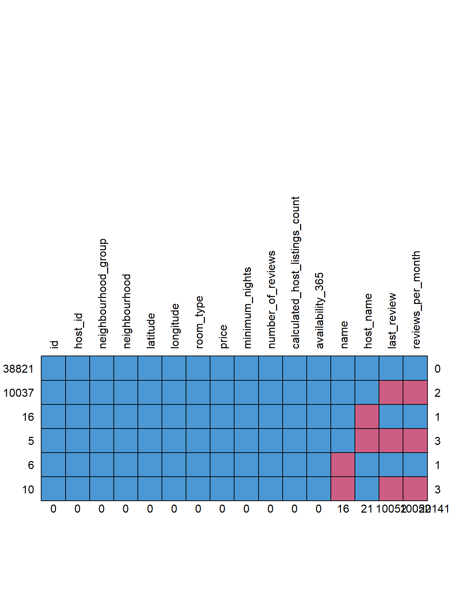
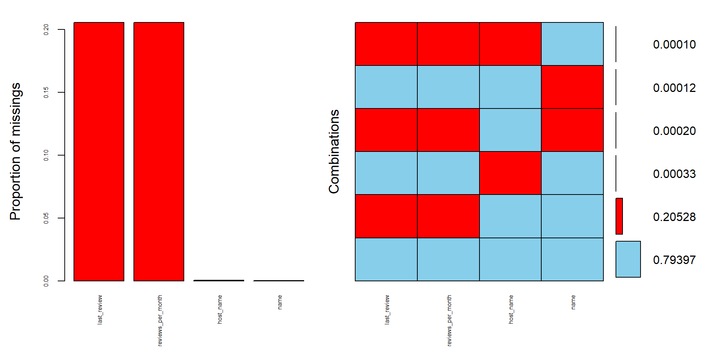
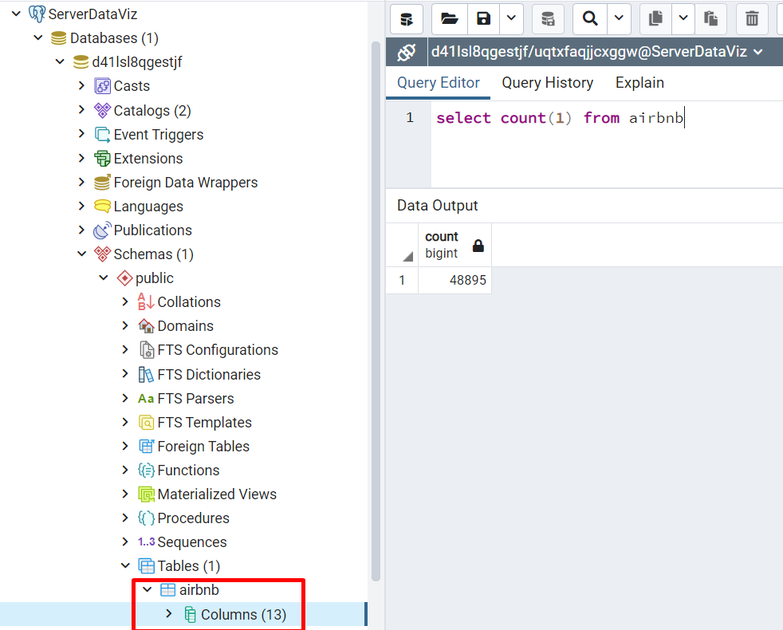

Chapter 2 Cargue y Limpieza de Datos
En este capítulo abordaremos el cargue de los datos de Airbnb de la ciudad de Nueva York en el año 2019.
2.1 Carga de datos
El archivo CSV con el listado de Airbnb de la ciudad de Nueva York para el año 2019 descargado de Kaggle se cargará en una base de datos en Heroku Postgress. Pero para lograr esto, primero debemos cargar como dataframe el archivo a través de la función read.csv(), agregando la instrucción na = c("", "NA") para tomar los valores vacíos como datos faltantes na.
airbnb <- read.csv(file = "Datasets/AB_NYC_2019.csv", na = c("", "NA"))
head(airbnb)## id name host_id host_name
## 1 2539 Clean & quiet apt home by the park 2787 John
## 2 2595 Skylit Midtown Castle 2845 Jennifer
## 3 3647 THE VILLAGE OF HARLEM....NEW YORK ! 4632 Elisabeth
## 4 3831 Cozy Entire Floor of Brownstone 4869 LisaRoxanne
## 5 5022 Entire Apt: Spacious Studio/Loft by central park 7192 Laura
## 6 5099 Large Cozy 1 BR Apartment In Midtown East 7322 Chris
## neighbourhood_group neighbourhood latitude longitude room_type price
## 1 Brooklyn Kensington 40.64749 -73.97237 Private room 149
## 2 Manhattan Midtown 40.75362 -73.98377 Entire home/apt 225
## 3 Manhattan Harlem 40.80902 -73.94190 Private room 150
## 4 Brooklyn Clinton Hill 40.68514 -73.95976 Entire home/apt 89
## 5 Manhattan East Harlem 40.79851 -73.94399 Entire home/apt 80
## 6 Manhattan Murray Hill 40.74767 -73.97500 Entire home/apt 200
## minimum_nights number_of_reviews last_review reviews_per_month
## 1 1 9 2018-10-19 0.21
## 2 1 45 2019-05-21 0.38
## 3 3 0 <NA> NA
## 4 1 270 2019-07-05 4.64
## 5 10 9 2018-11-19 0.10
## 6 3 74 2019-06-22 0.59
## calculated_host_listings_count availability_365
## 1 6 365
## 2 2 355
## 3 1 365
## 4 1 194
## 5 1 0
## 6 1 129Este archivo contiene 48.895 registros y 16 variables para análisis. En la siguiente sección revisaremos si existen datos faltantes en el dataset.
2.2 Revisión de datos faltantes
Para determinar la existencia de datos faltantes en el dataframe Airbnb, primero determinaremos por columna cual es su proporción de valores na.
pMiss <- function(x){sum(is.na(x))/length(x)*100}
apply(airbnb,2,pMiss)## id name
## 0.00000000 0.03272318
## host_id host_name
## 0.00000000 0.04294918
## neighbourhood_group neighbourhood
## 0.00000000 0.00000000
## latitude longitude
## 0.00000000 0.00000000
## room_type price
## 0.00000000 0.00000000
## minimum_nights number_of_reviews
## 0.00000000 0.00000000
## last_review reviews_per_month
## 20.55833930 20.55833930
## calculated_host_listings_count availability_365
## 0.00000000 0.00000000Tenemos valores faltantes en las colunmnas name, host_name, last_review y reviews_per_month, sin embargo, solo estas dos últimas están por encima del umbral seguro (5%), lo que podría indicarnos a priori que son variables que deben eliminarse porque no aportarán al análisis. Sin embargo, esta es una decisión que debe tomarse con un mayor análisis de estos registros.
Haremos uso de la función md.pattern del paquete mice, que nos brinda visualmente el patrón de los datos faltantes, para un mejor entendimiento de estos.
md.pattern(airbnb, plot = TRUE, rotate.names=TRUE)
## id host_id neighbourhood_group neighbourhood latitude longitude room_type
## 38821 1 1 1 1 1 1 1
## 10037 1 1 1 1 1 1 1
## 16 1 1 1 1 1 1 1
## 5 1 1 1 1 1 1 1
## 6 1 1 1 1 1 1 1
## 10 1 1 1 1 1 1 1
## 0 0 0 0 0 0 0
## price minimum_nights number_of_reviews calculated_host_listings_count
## 38821 1 1 1 1
## 10037 1 1 1 1
## 16 1 1 1 1
## 5 1 1 1 1
## 6 1 1 1 1
## 10 1 1 1 1
## 0 0 0 0
## availability_365 name host_name last_review reviews_per_month
## 38821 1 1 1 1 1 0
## 10037 1 1 1 0 0 2
## 16 1 1 0 1 1 1
## 5 1 1 0 0 0 3
## 6 1 0 1 1 1 1
## 10 1 0 1 0 0 3
## 0 16 21 10052 10052 20141El patrón nos indica que 38.821 registros no tienen datos faltantes, que los datos faltantes se encuentran en las colunmnas name, host_name, last_review y reviews_per_month (como habíamos encontrado anteriormente), con 16, 21, 10.052 y 10.052 registros, respectivamente. Adicionalmente, el mayor número de registros con datos faltantes (10.037) se encuentran en el patrón que solo contiene na en las columnas last_review y reviews_per_month y solo hay tres filas que contienen más de un valor perdido y de esas solo dos contienen más de dos valores perdidos.
Haciendo uso del paquete VIM, podemos ver la proporción de datos faltantes gráficamente. Por cuestión de espacio y mejor visualización del gráfico, trabajaremos solo con la columnas identificadas anteriormente que tienen datos faltantes.
airbnb_columns=airbnb[,c("name","host_name","last_review","reviews_per_month")]
aggr(airbnb_columns, numbers=TRUE, sortVars=TRUE, labels=names(data), cex.axis=.5, gap=3)
##
## Variables sorted by number of missings:
## Variable Count
## last_review 0.2055833930
## reviews_per_month 0.2055833930
## host_name 0.0004294918
## name 0.0003272318El gráfico de barras anterior, nos muestra que las columnas last_review y reviews_per_month representan la mayor proporción de datos faltantes y la proporción para la columnas name y host_name no es significativa. Este nuevo patrón nos complemente el anterior obtenido con el paquete micepuesto que nos indica adicionalmente que el 79,4% de los datos no tienen datos perdidos y nos muestra la proporción de filas que tienen un determinado patrón de datos perdidos, por ejemplo, el 20,52% tienen el patrón de datos perdidos sólo en las columnas en las columnas last_review y reviews_per_month.
El número de datos perdidos en el dataframe es bastante significativo (20.6%), sin embargo, al analizar lo que significan las columnas que los tienen, vemos por un lado que para el análisis posterior las columnas name y host_name no son necesarias y pueden elimminarse.
borrar = c("name", "host_name")
airbnb = airbnb[, !(names(airbnb) %in% borrar)]
head(airbnb)## id host_id neighbourhood_group neighbourhood latitude longitude
## 1 2539 2787 Brooklyn Kensington 40.64749 -73.97237
## 2 2595 2845 Manhattan Midtown 40.75362 -73.98377
## 3 3647 4632 Manhattan Harlem 40.80902 -73.94190
## 4 3831 4869 Brooklyn Clinton Hill 40.68514 -73.95976
## 5 5022 7192 Manhattan East Harlem 40.79851 -73.94399
## 6 5099 7322 Manhattan Murray Hill 40.74767 -73.97500
## room_type price minimum_nights number_of_reviews last_review
## 1 Private room 149 1 9 2018-10-19
## 2 Entire home/apt 225 1 45 2019-05-21
## 3 Private room 150 3 0 <NA>
## 4 Entire home/apt 89 1 270 2019-07-05
## 5 Entire home/apt 80 10 9 2018-11-19
## 6 Entire home/apt 200 3 74 2019-06-22
## reviews_per_month calculated_host_listings_count availability_365
## 1 0.21 6 365
## 2 0.38 2 355
## 3 NA 1 365
## 4 4.64 1 194
## 5 0.10 1 0
## 6 0.59 1 129Por otro lado, al analizar los registros faltantes en las columnas last_review y reviews_per_month, encontramos que todos corresponden a aquellos donde no existen una evaluación por lo tanto, el manejo de estos datos es simple y se procede de la siguiente manera, se asigna un 0 en la columna reviews_per_month y se elimina la columna last_review por no tener valor significativo para nuestro análisis posterior.
borrar = c("last_review")
airbnb = airbnb[, !(names(airbnb) %in% borrar)]
airbnb <- mutate_at(airbnb, c("reviews_per_month"), ~replace(., is.na(.), 0))
head(airbnb)## id host_id neighbourhood_group neighbourhood latitude longitude
## 1 2539 2787 Brooklyn Kensington 40.64749 -73.97237
## 2 2595 2845 Manhattan Midtown 40.75362 -73.98377
## 3 3647 4632 Manhattan Harlem 40.80902 -73.94190
## 4 3831 4869 Brooklyn Clinton Hill 40.68514 -73.95976
## 5 5022 7192 Manhattan East Harlem 40.79851 -73.94399
## 6 5099 7322 Manhattan Murray Hill 40.74767 -73.97500
## room_type price minimum_nights number_of_reviews reviews_per_month
## 1 Private room 149 1 9 0.21
## 2 Entire home/apt 225 1 45 0.38
## 3 Private room 150 3 0 0.00
## 4 Entire home/apt 89 1 270 4.64
## 5 Entire home/apt 80 10 9 0.10
## 6 Entire home/apt 200 3 74 0.59
## calculated_host_listings_count availability_365
## 1 6 365
## 2 2 355
## 3 1 365
## 4 1 194
## 5 1 0
## 6 1 129En este punto nuestros datos ya no tienen valores faltantes y trabajaremos en adelante con un dataframe de 48.895 y 13 variables.
apply(airbnb,2,pMiss)## id host_id
## 0 0
## neighbourhood_group neighbourhood
## 0 0
## latitude longitude
## 0 0
## room_type price
## 0 0
## minimum_nights number_of_reviews
## 0 0
## reviews_per_month calculated_host_listings_count
## 0 0
## availability_365
## 02.3 Creación en base de datos
El dataframe sin datos faltantes generado en la sección anterior debe cargarse en una base de datos en Heroku Postgress. Para esto primero debemos conectarnos a ella, usando la función dbConnect() con los datos apropiados.
con <- dbConnect(RPostgres::Postgres(),
dbname = "d41lsl8qgestjf",
host = "ec2-3-229-43-149.compute-1.amazonaws.com",
port = 5432,
user = "uqtxfaqjjcxggw",
password = "916d311356954de6a99118d13578bb9d1b47bdc86cb8360a60b9606293bd882d")Una vez tengamos establecida la conexión, insertamos los datos en la tabla airbnb, usando la función dbWriteTable()
dbWriteTable(con, 'airbnb', airbnb, row.names=FALSE, overwrite=TRUE)
Verifiquemos que podamos leer los datos, através de la función dbGetQuery()
df = dbGetQuery(con, "SELECT * FROM airbnb")
summary(df)## id host_id neighbourhood_group neighbourhood
## Min. : 2539 Min. : 2438 Length:48895 Length:48895
## 1st Qu.: 9471945 1st Qu.: 7822033 Class :character Class :character
## Median :19677284 Median : 30793816 Mode :character Mode :character
## Mean :19017143 Mean : 67620011
## 3rd Qu.:29152178 3rd Qu.:107434423
## Max. :36487245 Max. :274321313
## latitude longitude room_type price
## Min. :40.50 Min. :-74.24 Length:48895 Min. : 0.0
## 1st Qu.:40.69 1st Qu.:-73.98 Class :character 1st Qu.: 69.0
## Median :40.72 Median :-73.96 Mode :character Median : 106.0
## Mean :40.73 Mean :-73.95 Mean : 152.7
## 3rd Qu.:40.76 3rd Qu.:-73.94 3rd Qu.: 175.0
## Max. :40.91 Max. :-73.71 Max. :10000.0
## minimum_nights number_of_reviews reviews_per_month
## Min. : 1.00 Min. : 0.00 Min. : 0.000
## 1st Qu.: 1.00 1st Qu.: 1.00 1st Qu.: 0.040
## Median : 3.00 Median : 5.00 Median : 0.370
## Mean : 7.03 Mean : 23.27 Mean : 1.091
## 3rd Qu.: 5.00 3rd Qu.: 24.00 3rd Qu.: 1.580
## Max. :1250.00 Max. :629.00 Max. :58.500
## calculated_host_listings_count availability_365
## Min. : 1.000 Min. : 0.0
## 1st Qu.: 1.000 1st Qu.: 0.0
## Median : 1.000 Median : 45.0
## Mean : 7.144 Mean :112.8
## 3rd Qu.: 2.000 3rd Qu.:227.0
## Max. :327.000 Max. :365.0